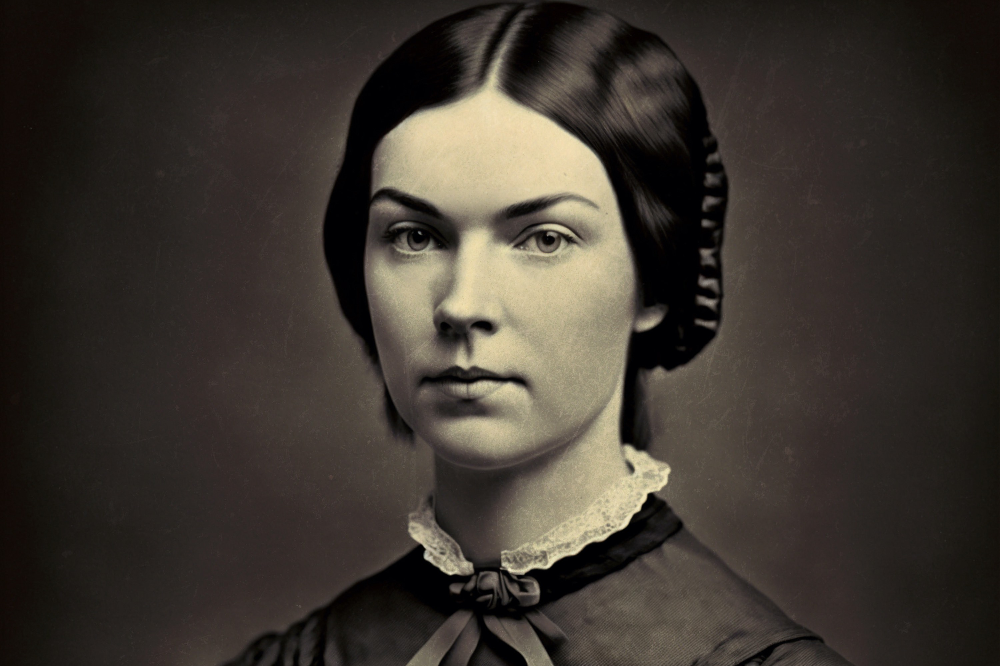

Born on December 10, 1830, in Amherst, Massachusetts, Emily Dickinson was an American poet who, despite having lived much of her life in reclusive isolation, is now considered one of America's most important literary figures. Here are some of her popular works:
- Because I could not stop for Death
- I'm nobody! Who are you?
- Hope is the thing with feathers
